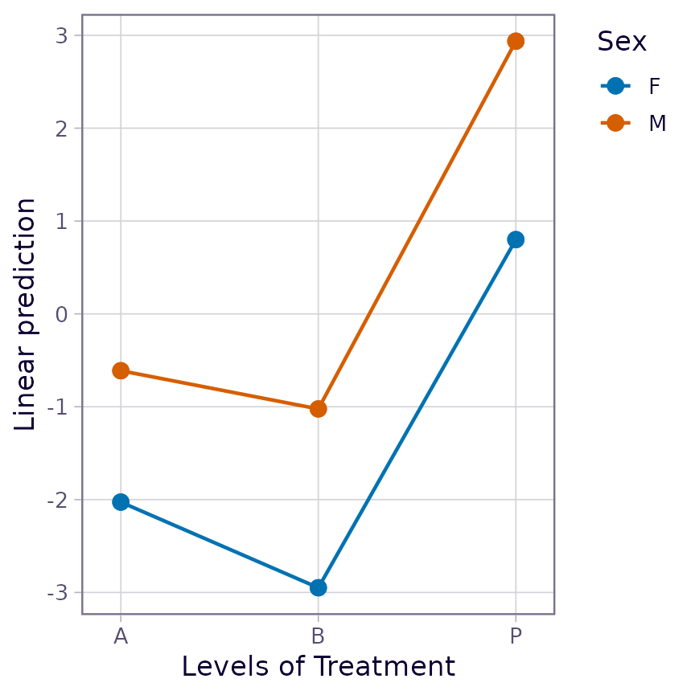
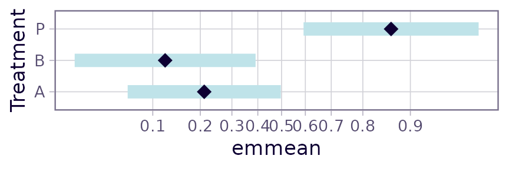
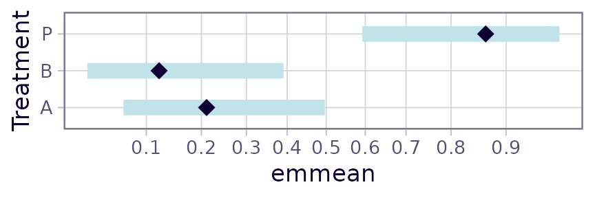

Transformations and link functions in emmeans
emmeans package, Version 1.11.1.1
Source:vignettes/transformations.Rmd
transformations.RmdContents
This vignette covers the intricacies of transformations and link functions in emmeans.
Overview
Consider an example with the pigs dataset that is used
in many of these vignettes; but this time, we use a log
transformation of the response:
This model has two factors, source and
percent (coerced to a factor), as predictors; and
log-transformed conc as the response. Here we obtain the
EMMs for source, examine its structure, and finally produce
a summary, including a test against a null value of log(35):
## 'emmGrid' object with variables:
## source = fish, soy, skim
## Transformation: "log"## source emmean SE df lower.CL upper.CL null t.ratio p.value
## fish 3.39 0.0367 23 3.32 3.47 3.56 -4.385 0.0002
## soy 3.67 0.0374 23 3.59 3.74 3.56 2.988 0.0066
## skim 3.80 0.0394 23 3.72 3.88 3.56 6.130 <.0001
##
## Results are averaged over the levels of: percent
## Results are given on the log (not the response) scale.
## Confidence level used: 0.95Now suppose that we want the EMMs expressed on the same scale as
conc. This can be done by adding
type = "response" to the summary() call:
## source response SE df lower.CL upper.CL null t.ratio p.value
## fish 29.8 1.09 23 27.6 32.1 35 -4.385 0.0002
## soy 39.1 1.47 23 36.2 42.3 35 2.988 0.0066
## skim 44.6 1.75 23 41.1 48.3 35 6.130 <.0001
##
## Results are averaged over the levels of: percent
## Confidence level used: 0.95
## Intervals are back-transformed from the log scale
## Tests are performed on the log scaleNote: Looking ahead, this output is compared later in this vignette with a bias-adjusted version.
Timing is everything
Dealing with transformations in emmeans is somewhat complex, due to the large number of possibilities. But the key is understanding what happens, when. These results come from a sequence of steps. Here is what happens (and doesn’t happen) at each step:
- The reference grid is constructed for the
log(conc)model. The fact that a log transformation is used is recorded, but nothing else is done with that information. - The predictions on the reference grid are averaged over the four
percentlevels, for eachsource, to obtain the EMMs forsource– still on thelog(conc)scale. - The standard errors and confidence intervals for these EMMs are
computed – still on the
log(conc)scale. - Only now do we do back-transformation…
- The EMMs are back-transformed to the
concscale. - The endpoints of the confidence intervals are back-transformed.
- The t tests and P values are left as-is.
- The standard errors are converted to the
concscale using the delta method. These SEs were not used in constructing the tests and confidence intervals.
- The EMMs are back-transformed to the
The model is our best guide
This choice of timing is based on the idea that the model is
right. In particular, the fact that the response is transformed
suggests that the transformed scale is the best scale to be working
with. In addition, the model specifies that the effects of
source and percent are linear on the
transformed scale; inasmuch as marginal averaging to obtain EMMs is a
linear operation, that averaging is best done on the transformed scale.
For those two good reasons, back-transforming to the response scale is
delayed until the very end by default.
Re-gridding
As well-advised as it is, some users may not want the default timing
of things. The tool for changing when back-transformation is performed
is the regrid() function – which, with default settings of
its arguments, back-transforms an emmGrid object and
adjusts everything in it appropriately. For example:
## 'emmGrid' object with variables:
## source = fish, soy, skim## source response SE df lower.CL upper.CL null t.ratio p.value
## fish 29.8 1.09 23 27.5 32.1 35 -4.758 0.0001
## soy 39.1 1.47 23 36.1 42.2 35 2.827 0.0096
## skim 44.6 1.75 23 40.9 48.2 35 5.446 <.0001
##
## Results are averaged over the levels of: percent
## Confidence level used: 0.95Notice that the structure no longer includes the transformation.
That’s because it is no longer relevant; the reference grid is on the
conc scale, and how we got there is now forgotten. Compare
this summary() result with the preceding one, and note the
following:
- It no longer has annotations concerning transformations.
- The estimates and SEs are identical.
- The confidence intervals, t ratios, and P values are not identical. This is because, this time, the SEs shown in the table are the ones actually used to construct the tests and intervals.
Understood, right? But think carefully about how these EMMs were
obtained. They are back-transformed from emm.src, in which
the marginal averaging was done on the log scale. If we want to
back-transform before doing the averaging, we need to call
regrid() after the reference grid is constructed but before
the averaging takes place:
pigs.rg <- ref_grid(pigs.lm)
remm.src <- emmeans(regrid(pigs.rg), "source")
summary(remm.src, infer = TRUE, null = 35)## source response SE df lower.CL upper.CL null t.ratio p.value
## fish 30.0 1.10 23 27.7 32.2 35 -4.585 0.0001
## soy 39.4 1.49 23 36.3 42.5 35 2.927 0.0076
## skim 44.8 1.79 23 41.1 48.5 35 5.486 <.0001
##
## Results are averaged over the levels of: percent
## Confidence level used: 0.95These results all differ from either of the previous two summaries –
again, because the averaging is done on the conc scale
rather than the log(conc) scale.
Note: For those who want to routinely back-transform before
averaging, the regrid argument in ref_grid()
simplifies this. The first two steps above could have been done more
easily as follows:
remm.src <- emmeans(pigs.lm, "source", regrid = "response")But don’t get regrid and type confused. The
regrid argument is passed to regrid() (as the
transform argument) after the reference grid is
constructed, whereas the type argument is simply remembered
and used by summary(). So a similar-looking call:
emmeans(pigs.lm, "source", type = "response")will compute the results we have seen for emm.src –
back-transformed after averaging on the log scale.
Remember again: When it comes to transformations, timing is everything.
Implied regridding with certain modes
Some model classes provide special argument(s) (typically
mode) that may cause transformations or links to be handled
early. For example, cumulative link models for ordinal data allow for a
"prob" mode that produces estimates of probabilities for
each ordinal level. The reference grid comprises estimates on a
probability scale, and whatever link was used (say, probit) has already
been accounted for, so is not “remembered” for possible later
back-transformation. In that sense, when we use
mode = "prob", it is sort of like an implied call to
regrid() that takes place at the time the reference
grid is constructed, preempting any timing choices you might
otherwise have made about handling the transformation. If there are one
or more factors that are averaged over in estimating marginal means will
be averages of the probabilities in the reference grid; so they will be
different than what you would have obtained by keeping things on the
link scale and then computing the probabilities after averaging on the
link scale.
Similar things happen with certain options with multinomial models, zero-inflated, or hurdle models. Those special modes are a great convenience for getting estimates on a scale that is desired, but they also force you to obtain marginal means of measurements already on that scale.
Link functions
Exactly the same ideas we have presented for response transformations apply to generalized linear models having non-identity link functions. As far as emmeans is concerned, there is no difference at all.
To illustrate, consider the neuralgia dataset provided
in the package. These data come from an experiment reported in a SAS
technical report where different treatments for neuralgia are compared.
The patient’s sex is an additional factor, and their age is a covariate.
The response is Pain, a binary variable on whether or not
the patient reports neuralgia pain after treatment. The model suggested
in the SAS report is equivalent to the following. We use it to obtain
estimated probabilities of experiencing pain:
neuralgia.glm <- glm(Pain ~ Treatment * Sex + Age, family = binomial(), data = neuralgia)
neuralgia.emm <- emmeans(neuralgia.glm, "Treatment", type = "response")## NOTE: Results may be misleading due to involvement in interactions
neuralgia.emm## Treatment prob SE df asymp.LCL asymp.UCL
## A 0.211 0.1110 Inf 0.0675 0.497
## B 0.121 0.0835 Inf 0.0285 0.391
## P 0.866 0.0883 Inf 0.5927 0.966
##
## Results are averaged over the levels of: Sex
## Confidence level used: 0.95
## Intervals are back-transformed from the logit scale(The note about the interaction is discussed shortly.) Note that the
averaging over Sex is done on the logit scale,
before the results are back-transformed for the summary. We may
use pairs() to compare these estimates; note that logits
are logs of odds; so this is another instance where log-differences are
back-transformed – in this case to odds ratios:
pairs(neuralgia.emm, reverse = TRUE)## contrast odds.ratio SE df null z.ratio p.value
## B / A 0.513 0.515 Inf 1 -0.665 0.7837
## P / A 24.234 25.100 Inf 1 3.073 0.0060
## P / B 47.213 57.200 Inf 1 3.179 0.0042
##
## Results are averaged over the levels of: Sex
## P value adjustment: tukey method for comparing a family of 3 estimates
## Tests are performed on the log odds ratio scaleSo there is evidence of considerably more pain being reported with
placebo (treatment P) than with either of the other two
treatments. The estimated odds of pain with B are about
half that for A, but this finding is not statistically
significant. (The odds that this is a made-up dataset seem quite high,
but that finding is strictly this author’s impression.)
Observe that there is a note in the output for
neuralgia.emm that the results may be misleading. It is
important to take it seriously, because if two factors interact, it may
be the case that marginal averages of predictions don’t reflect what is
happening at any level of the factors being averaged over. To find out,
look at an interaction plot of the fitted model:
emmip(neuralgia.glm, Sex ~ Treatment)
There is no practical difference between females and males in the
patterns of response to Treatment; so I think most people
would be quite comfortable with the marginal results that are reported
here.
Some users prefer risk ratios (ratios of probabilities) rather than odds ratios. We will revisit this example below after we have discussed some more tools.
Graphing transformations and links
There are a few options for displaying transformed results
graphically. First, the type argument works just as it does
in displaying a tabular summary. Following through with the
neuralgia example, let us display the marginal
Treatment EMMs on both the link scale and the response
scale (we are opting to do the averaging on the link scale):
neur.Trt.emm <- suppressMessages(emmeans(neuralgia.glm, "Treatment"))
plot(neur.Trt.emm) # Link scale by default
plot(neur.Trt.emm, type = "response")<img src=“/home/runner/work/emmeans/emmeans/docs/articles/transformations_files/figure-html/unnamed-chunk-13-2.png” alt=“Plot B: Display of the results of confint(neur.Trt.emm, type =”response”). These intervals are markedly skewed right|left for low|high estimated probabilities” width=“432” />
Besides whether or not we see response values, there is a dramatic difference in the symmetry of the intervals.
For emmip() and plot() only (and
currently only with the “ggplot” engine), there is also the option of
specifying type = "scale", which causes the response values
to be calculated but plotted on a nonlinear scale corresponding to the
transformation or link:
plot(neur.Trt.emm, type = "scale")Notice that the interior part of this plot is identical to the plot on the link scale. Only the horizontal axis is different. That is because the response values are transformed using the link function to determine the plotting positions of the graphical elements – putting them back where they started.
As is the case here, nonlinear scales can be confusing to read, and
it is very often true that you will want to display more scale
divisions, and even add minor ones. This is done via adding arguments
for the function ggplot2::scale_x_continuous() (see its
documentation):
plot(neur.Trt.emm, type = "scale", breaks = seq(0.10, 0.90, by = 0.10),
minor_breaks = seq(0.05, 0.95, by = 0.05))
When using the "ggplot" engine, you always have the
option of using ggplot2 to incorporate a transformed
scale – and it doesn’t even have to be the same as the transformation
used in the model. For example, here we display the same results on an
arcsin-square-root scale.
plot(neur.Trt.emm, type = "response") +
ggplot2::scale_x_continuous(trans = scales::asn_trans(),
breaks = seq(0.10, 0.90, by = 0.10))
This comes across as a compromise: not as severe as the logit scaling, and not as distorted as the linear scaling of response values.
Again, the same techniques can be used with emmip(),
except it is the vertical scale that is affected.
Models having both a response transformation and a link function
It is possible to have a generalized linear model with a non-identity
link and a response transformation. Here is an example, with
the built-in wapbreaks dataset:
## 'emmGrid' object with variables:
## wool = A, B
## tension = L, M, H
## Transformation: "inverse"
## Additional response transformation: "sqrt"The canonical link for a gamma model is the reciprocal (or inverse);
and there is the square-root response transformation besides. If we
choose type = "response" in summarizing, we undo
both transformations:
emmeans(warp.glm, ~ tension | wool, type = "response")## wool = A:
## tension response SE df lower.CL upper.CL
## L 42.9 5.24 48 34.0 55.7
## M 23.3 2.85 48 18.5 30.3
## H 23.6 2.88 48 18.7 30.7
##
## wool = B:
## tension response SE df lower.CL upper.CL
## L 27.4 3.35 48 21.8 35.7
## M 28.1 3.43 48 22.3 36.5
## H 18.5 2.26 48 14.7 24.1
##
## Confidence level used: 0.95
## Intervals are back-transformed from the sqrt[inverse] scaleWhat happened here is first the linear predictor was back-transformed from the link scale (inverse); then the squares were obtained to back-transform the rest of the way. It is possible to undo the link, and not the response transformation:
emmeans(warp.glm, ~ tension | wool, type = "unlink")## wool = A:
## tension response SE df lower.CL upper.CL
## L 6.55 0.400 48 5.83 7.46
## M 4.83 0.295 48 4.30 5.50
## H 4.86 0.297 48 4.33 5.54
##
## wool = B:
## tension response SE df lower.CL upper.CL
## L 5.24 0.320 48 4.67 5.97
## M 5.30 0.324 48 4.72 6.04
## H 4.30 0.263 48 3.83 4.90
##
## Confidence level used: 0.95
## Intervals are back-transformed from the inverse scaleIt is not possible to undo the response transformation and leave the link in place, because the response was transform first, then the link model was applied; we have to undo those in reverse order to make sense.
One may also use "unlink" as a transform
argument in regrid() or through
ref_grid().
Special transformations
The make.tran() function provides several special
transformations and sets things up so they can be handled in
emmeans with relative ease. (See
help("make.tran", "emmeans") for descriptions of what is
available.) make.tran() works much like
stats::make.link() in that it returns a list of functions
linkfun(), linkinv(), etc. that serve in
managing results on a transformed scale. The difference is that most
transformations with make.tran() require additional
arguments.
To use this capability in emmeans(), it is fortuitous to
first obtain the make.tran() result, and then to use it as
the enclosing environment for fitting the model, with
linkfun as the transformation. For example, suppose the
response variable is a percentage and we want to use the response
transformation \(\sin^{-1}\sqrt{y/100}\). Then proceed like
this:
tran <- make.tran("asin.sqrt", 100)
my.model <- with(tran,
lmer(linkfun(percent) ~ treatment + (1|Block), data = mydata))Subsequent calls to ref_grid(), emmeans(),
regrid(), etc. will then be able to access the
transformation information correctly.
The help page for make.tran() has an example like this
using a Box-Cox transformation.
Specifying a transformation after the fact
It is not at all uncommon to fit a model using statements like the following:
mydata <- transform(mydata, logy.5 = log(yield + 0.5))
my.model <- lmer(logy.5 ~ treatment + (1|Block), data = mydata)In this case, there is no way for ref_grid() to figure
out that a response transformation was used. What can be done is to
update the reference grid with the required information:
Subsequently, use my.rg in place of
my.model in any emmeans() analyses, and the
transformation information will be there.
For standard transformations (those in
stats::make.link()), just give the name of the
transformation; e.g.,
Auto-detected response transformations
As can be seen in the initial pigs.lm example in this
vignette, certain straightforward response transformations such as
log, sqrt, etc. are automatically detected
when emmeans() (really, ref_grid()) is called
on the model object. In fact, scaling and shifting is supported too; so
the preceding example with my.model could have been done
more easily by specifying the transformation directly in the model
formula:
The transformation would be auto-detected, saving you the trouble of
adding it later. Similarly, a response transformation of
2 * sqrt(y + 1) would be correctly auto-detected. A model
with a linearly transformed response, e.g. 4*(y - 1), would
not be auto-detected, but 4*I(y + -1) would be
interpreted as 4*identity(y + -1). Parsing is such that the
response expression must be of the form
mult * fcn(resp + const); operators of - and
/ are not recognized.
Faking a log transformation
The regrid() function makes it possible to fake a log
transformation of the response. Why would you want to do this? So that
you can make comparisons using ratios instead of differences.
Consider the pigs example once again, but suppose we had
fitted a model with a square-root transformation instead of a log:
pigroot.lm <- lm(sqrt(conc) ~ source + factor(percent), data = pigs)
logemm.src <- regrid(emmeans(pigroot.lm, "source"), transform = "log")
confint(logemm.src, type = "response")## source response SE df lower.CL upper.CL
## fish 29.8 1.32 23 27.2 32.7
## soy 39.2 1.54 23 36.2 42.6
## skim 45.0 1.74 23 41.5 48.7
##
## Results are averaged over the levels of: percent
## Confidence level used: 0.95
## Intervals are back-transformed from the log scale
pairs(logemm.src, type = "response")## contrast ratio SE df null t.ratio p.value
## fish / soy 0.760 0.0454 23 1 -4.591 0.0004
## fish / skim 0.663 0.0391 23 1 -6.965 <.0001
## soy / skim 0.872 0.0469 23 1 -2.548 0.0457
##
## Results are averaged over the levels of: percent
## P value adjustment: tukey method for comparing a family of 3 estimates
## Tests are performed on the log scaleThese results are not identical, but very similar to the back-transformed confidence intervals above for the EMMs and the pairwise ratios in the “comparisons” vignette, where the fitted model actually used a log response.
Faking other transformations
It is possible to fake transformations other than the log. Just use the same method, e.g. (results not displayed)
regrid(emm, transform = "probit")would re-grid the existing emm to the probit scale. Note
that any estimates in emm outside of the interval \((0,1)\) will be flagged as
non-estimable.
The section on standardized responses gives an example of reverse-engineering a standardized response transformation in this way.
Revisiting the neuralgia example
As was mentioned before in the neuralgia example, some users prefer
ratios of probabilities (risk ratios) rather than odds ratios. The
additional machinery of regrid() makes this possible.
First, do
log.emm <- regrid(neuralgia.emm, "log")While each node of neuralgia.emm is an estimate of the
logit of a probability, the corresponding nodes of log.emm
are estimates of the log of the same probability. Thus, pairwise
comparisons are differences of logs, which are logs of ratios. The risk
ratios are thus obtainable by
pairs(log.emm, reverse = TRUE, type = "response")## contrast ratio SE df null z.ratio p.value
## B / A 0.572 0.484 Inf 1 -0.661 0.7863
## P / A 4.107 2.220 Inf 1 2.613 0.0244
## P / B 7.181 5.190 Inf 1 2.730 0.0174
##
## Results are averaged over the levels of: Sex
## P value adjustment: tukey method for comparing a family of 3 estimates
## Tests are performed on the log scaleThe test statistics and P values differ somewhat from those for the odds ratios because they are computed on the log scale rather than the original logit scale.
We were able to obtain both odds ratios and risk ratios for
neuralgia.glm. But what if we had not used the logit link?
Then the odds ratios would not just fall out naturally. However, we can
regrid() to the "logit" scale if we want odds
ratios, or to "log" scale if we want risk ratios. For
example,
neuralgia.prb <- glm(Pain ~ Treatment * Sex + Age, family = binomial(link = "probit"),
data = neuralgia)
prb.emm <- suppressMessages(emmeans(neuralgia.prb, "Treatment"))
pairs(regrid(prb.emm, "logit"), type = "response", reverse = TRUE)## contrast odds.ratio SE df null z.ratio p.value
## B / A 0.517 0.509 Inf 1 -0.670 0.7809
## P / A 15.561 14.400 Inf 1 2.975 0.0082
## P / B 30.077 33.200 Inf 1 3.081 0.0058
##
## Results are averaged over the levels of: Sex
## P value adjustment: tukey method for comparing a family of 3 estimates
## Tests are performed on the log odds ratio scaleThese are vaguely comparable to the odds ratios we obtained with
neuralgia.glm, Similar re-gridding for the log will give us
risk ratios.
Alternative scale
It is possible to create a report on an alternative scale by updating
the tran component. For example, suppose we want percent
differences instead of ratios in the preceding example with the
pigs dataset. This is possible by modifying the reverse
transformation: since the usual reverse transformation is a ratio of the
form \(r = a/b\), we have that the
percentage difference between \(a\) and
\(b\) is \(100(a-b)/b = 100(r-1)\). Thus,
pct.diff.tran <- list(
linkfun = function(mu) log(mu/100 + 1),
linkinv = function(eta) 100 * (exp(eta) - 1),
mu.eta = function(eta) 100 * exp(eta),
name = "log(pct.diff)"
)
update(pairs(logemm.src, type = "response"),
tran = pct.diff.tran, inv.lbl = "pct.diff", adjust = "none",
infer = c(TRUE, TRUE))## contrast pct.diff SE df lower.CL upper.CL t.ratio p.value
## fish / soy -24.0 4.54 23 -32.8 -13.97 -4.591 0.0001
## fish / skim -33.7 3.91 23 -41.3 -25.08 -6.965 <.0001
## soy / skim -12.8 4.69 23 -22.0 -2.54 -2.548 0.0180
##
## Results are averaged over the levels of: percent
## Confidence level used: 0.95
## Intervals are back-transformed from the log(pct.diff) scale
## Tests are performed on the log(pct.diff) scaleAnother way to obtain the same estimates is to directly transform the estimated ratios to \(100r - 100\):
## contrast estimate SE df lower.CL upper.CL t.ratio p.value
## (fish/soy) -24.0 4.54 23 -33.3 -14.6 -5.281 <.0001
## (fish/skim) -33.7 3.91 23 -41.8 -25.6 -8.613 <.0001
## (soy/skim) -12.8 4.69 23 -22.5 -3.1 -2.730 0.0119
##
## Results are averaged over the levels of: percent
## Confidence level used: 0.95While the estimates are the same, the tests and confidence intervals are different because they are computed on the re-gridded scale using the standard errors shown, rather than on the link scale as in the first results.
Standardized response
In some disciplines, it is common to fit a model to a standardized
response variable. R’s base function scale() makes this
easy to do; but it is important to notice that scale(y) is
more complicated than, say, sqrt(y), because
scale(y) requires all the values of y in order
to determine the centering and scaling parameters. The
ref_grid() function (called by `emmeans() and others) tries
to detect the scaling parameters. To illustrate:
fiber.lm <- lm(scale(strength) ~ machine * scale(diameter), data = fiber)
emmeans(fiber.lm, "machine") # on the standardized scale## machine emmean SE df lower.CL upper.CL
## A 0.00444 0.156 9 -0.349 0.358
## B 0.28145 0.172 9 -0.109 0.672
## C -0.33473 0.194 9 -0.774 0.105
##
## Results are given on the scale(40.2, 4.97) (not the response) scale.
## Confidence level used: 0.95
emmeans(fiber.lm, "machine", type = "response") # strength scale## machine response SE df lower.CL upper.CL
## A 40.2 0.777 9 38.5 42.0
## B 41.6 0.858 9 39.7 43.5
## C 38.5 0.966 9 36.3 40.7
##
## Confidence level used: 0.95
## Intervals are back-transformed from the scale(40.2, 4.97) scaleMore interesting (and complex) is what happens with
emtrends(). Without anything fancy added, we have
emtrends(fiber.lm, "machine", var = "diameter")## machine diameter.trend SE df lower.CL upper.CL
## A 0.222 0.0389 9 0.1339 0.310
## B 0.172 0.0450 9 0.0705 0.274
## C 0.174 0.0418 9 0.0791 0.268
##
## Confidence level used: 0.95These slopes are (change in scale(strength)) / (change
in diameter); that is, we didn’t do anything to undo the
response transformation, but the trend is based on exactly the variable
specified, diameter. To get (change in
strength) / (change in diameter), we need to
undo the response transformation, and that is done via
regrid (which invokes regrid() after the
reference grid is constructed):
emtrends(fiber.lm, "machine", var = "diameter", regrid = "response")## machine diameter.trend SE df lower.CL upper.CL
## A 1.104 0.194 9 0.666 1.54
## B 0.857 0.224 9 0.351 1.36
## C 0.864 0.208 9 0.394 1.33
##
## Confidence level used: 0.95What if we want slopes for (change in scale(strength)) /
(change in scale(diameter))? This can be done, but it is
necessary to manually specify the scaling parameters for
diameter.
## mean sd
## 24.133333 4.323799
emtrends(fiber.lm, "machine", var = "scale(diameter, 24.133, 4.324)")## machine scale(diameter, 24.133, 4.324).trend SE df lower.CL upper.CL
## A 0.960 0.168 9 0.579 1.34
## B 0.745 0.195 9 0.305 1.19
## C 0.751 0.181 9 0.342 1.16
##
## Confidence level used: 0.95This result is the one most directly related to the regression coefficients:
coef(fiber.lm)[4:6]## scale(diameter) machineB:scale(diameter) machineC:scale(diameter)
## 0.9598846 -0.2148202 -0.2086880There is a fourth possibility, (change in strength) /
(change in scale(diameter)), that I leave to the
reader.
What to do if auto-detection fails
Auto-detection of standardized responses is a bit tricky, and doesn’t
always succeed. If it fails, a message is displayed and the
transformation is ignored. In cases where it doesn’t work, we need to
explicitly specify the transformation using make.tran().
The methods are exactly as shown earlier in this vignette, so we show
the code but not the results for a hypothetical example.
One method is to fit the model and then add the transformation
information later. In this example, some.fcn is a
model-fitting function which for some reason doesn’t allow the scaling
information to be detected.
mod <- some.fcn(scale(RT) ~ group + (1|subject), data = mydata)
emmeans(mod, "group", type = "response",
tran = make.tran("scale", y = mydata$RT))The other, equivalent, method is to create the transformation object first and use it in fitting the model:
Reverse-engineering a standardized response
An interesting twist on all this is the reverse situation: Suppose we
fitted the model without the standardized response, but we want
to know what the results would be if we had standardized. Here we
reverse-engineer the fiber.lm example above:
fib.lm <- lm(strength ~ machine * diameter, data = fiber)
# On raw scale:
emmeans(fib.lm, "machine")## machine emmean SE df lower.CL upper.CL
## A 40.2 0.777 9 38.5 42.0
## B 41.6 0.858 9 39.7 43.5
## C 38.5 0.966 9 36.3 40.7
##
## Confidence level used: 0.95
# On standardized scale:
tran <- make.tran("scale", y = fiber$strength)
emmeans(fib.lm, "machine", regrid = tran)## machine emmean SE df lower.CL upper.CL
## A 0.00444 0.156 9 -0.349 0.358
## B 0.28145 0.172 9 -0.109 0.672
## C -0.33473 0.194 9 -0.774 0.105
##
## Results are given on the scale(40.2, 4.97) (not the response) scale.
## Confidence level used: 0.95In the latter call, the regrid argument causes
regrid() to be called after the reference grid is
constructed.
Bias adjustment
So far, we have discussed ideas related to back-transforming results as a simple way of expressing results on the same scale as the response. In particular, means obtained in this way are known as generalized means; for example, a log transformation of the response is associated with geometric means. When the goal is simply to make inferences about which means are less than which other means, and a response transformation is used, it is often acceptable to present estimates and comparisons of these generalized means. However, sometimes it is important to report results that actually do reflect expected values of the untransformed response. An example is a financial study, where the response is in some monetary unit. It may be convenient to use a response transformation for modeling purposes, but ultimately we may want to make financial projections in those same units.
In such settings, we need to make a bias adjustment when we back-transform, because any nonlinear transformation biases the expected values of statistical quantities. More specifically, suppose that we have a response \(Y\) and the transformed response is \(U\). To back-transform, we use \(Y = h(U)\); and using a Taylor approximation, \(Y \approx h(\eta) + h'(\eta)(U-\eta) + \frac12h''(\eta)(U-\eta)^2\), so that \(E(Y) \approx h(\eta) + \frac12h''(\eta)Var(U)\). This shows that the amount of needed bias adjustment is approximately \(\frac12h''(\eta)\sigma^2\) where \(\sigma\) is the error SD in the model for \(U\). It depends on \(\sigma\), and the larger this is, the greater the bias adjustment is needed. This second-order bias adjustment is what is currently used in the emmeans package when bias-adjustment is requested. There are better or exact adjustments for certain cases, and future updates may incorporate some of those.
Pigs example revisited
Let us compare the estimates in the overview
after we apply a bias adjustment. First, note that an estimate of the
residual SD is available via the sigma() function:
sigma(pigs.lm)## [1] 0.115128This estimate is used by default. The bias-adjusted EMMs for the sources are:
summary(emm.src, type = "response", bias.adj = TRUE)## source response SE df lower.CL upper.CL
## fish 30.0 1.10 23 27.8 32.4
## soy 39.4 1.48 23 36.5 42.6
## skim 44.9 1.77 23 41.3 48.7
##
## Results are averaged over the levels of: percent
## Confidence level used: 0.95
## Intervals are back-transformed from the log scale
## Bias adjustment applied based on sigma = 0.11513These estimates (and also their SEs) are slightly larger than we had
without bias adjustment. They are estimates of the arithmetic
mean responses, rather than the geometric means shown in the
overview. Had the value of sigma been larger, the
adjustment would have been greater. You can experiment with this by
adding a sigma = argument to the above call.
Response transformations vs. link functions
At this point, it is important to point out that the above discussion focuses on response transformations, as opposed to link functions used in generalized linear models (GLMs). In an ordinary GLM, no bias adjustment is needed, nor is it appropriate, because the link function is just used to define a nonlinear relationship between the actual response mean \(\eta\) and the linear predictor. That is, the back-transformed parameter is already the mean.
InsectSprays example
To illustrate this, consider the InsectSprays data in
the datasets package. The response variable is a count,
and there is one treatment, the spray that is used. Let us model the
count as a Poisson variable with (by default) a log link; and obtain the
EMMs, with and without a bias adjustment
ismod <- glm(count ~ spray, data = InsectSprays, family = poisson())
emmeans(ismod, "spray", type = "response")## spray rate SE df asymp.LCL asymp.UCL
## A 14.50 1.100 Inf 12.50 16.82
## B 15.33 1.130 Inf 13.27 17.72
## C 2.08 0.417 Inf 1.41 3.08
## D 4.92 0.640 Inf 3.81 6.35
## E 3.50 0.540 Inf 2.59 4.74
## F 16.67 1.180 Inf 14.51 19.14
##
## Confidence level used: 0.95
## Intervals are back-transformed from the log scaleThe above results were computed with no bias adjustment, the default. If you try
emmeans(ismod, "spray", type = "response", bias.adj = TRUE)you will get exactly the same results, plus a warning message that says bias adjustment was disabled. Why? Because in an ordinary GLM like this, we are already modeling the mean counts, and the link function is not a response transformation as such, just a part of the relationship we are specifying between the linear predictor and the mean. Given the simple structure of this dataset, we can verify this by noting that the estimates we have correspond exactly to the simple observed mean counts:
## A B C D E F
## 14.500000 15.333333 2.083333 4.916667 3.500000 16.666667The point here is that a GLM does not have an additive error term,
that the model is already formulated in terms of the mean, not some
generalized mean. (You can enable the bias-adjustment computations by
specifying a valid sigma value; but you should not do
so.)
Note that, in a generalized linear mixed model, including generalized estimating equations and such, there are additive random components involved, and then bias adjustment becomes appropriate.
CBPP example
Consider an example adapted from the help page for
lme4::cbpp. Contagious bovine pleuropneumonia (CBPP) is a
disease in African cattle, and the dataset contains data on incidence of
CBPP in several herds of cattle over four time periods. We will fit a
mixed model that accounts for herd variations as well as overdispersion
(variations larger than expected with a simple binomial model):
require(lme4)
cbpp <- transform(cbpp, unit = 1:nrow(cbpp))
cbpp.glmer <- glmer(cbind(incidence, size - incidence) ~ period +
(1 | herd) + (1 | unit),
family = binomial, data = cbpp)
emm <- emmeans(cbpp.glmer, "period")
summary(emm, type = "response")## period prob SE df asymp.LCL asymp.UCL
## 1 0.1824 0.0442 Inf 0.1109 0.2852
## 2 0.0614 0.0230 Inf 0.0290 0.1252
## 3 0.0558 0.0220 Inf 0.0254 0.1182
## 4 0.0334 0.0172 Inf 0.0120 0.0894
##
## Confidence level used: 0.95
## Intervals are back-transformed from the logit scaleThe above summary reflects the back-transformed estimates, with no bias adjustment. However, the model estimates two independent sources of random variation that probably should be taken into account:
lme4::VarCorr(cbpp.glmer)## Groups Name Std.Dev.
## unit (Intercept) 0.89107
## herd (Intercept) 0.18396Notably, the over-dispersion SD is considerably greater than the herd SD. Suppose we want to estimate the marginal probabilities of CBPP incidence, averaged over herds and over-dispersion variations. For this purpose, we need the combined effect of these variations; so we compute the overall SD via the Pythagorean theorem:
total.SD = sqrt(0.89107^2 + 0.18396^2)Accordingly, here are the bias-adjusted estimates of the marginal probabilities:
summary(emm, type = "response", bias.adjust = TRUE, sigma = total.SD)## period prob SE df asymp.LCL asymp.UCL
## 1 0.2216 0.0462 Inf 0.1426 0.321
## 2 0.0823 0.0292 Inf 0.0400 0.159
## 3 0.0751 0.0282 Inf 0.0351 0.151
## 4 0.0458 0.0230 Inf 0.0168 0.117
##
## Confidence level used: 0.95
## Intervals are back-transformed from the logit scale
## Bias adjustment applied based on sigma = 0.90986These estimates are somewhat larger than the unadjusted estimates (actually, any estimates greater than 0.5 would have been adjusted downward). These adjusted estimates are more appropriate for describing the marginal incidence of CBPP for all herds. In fact, these estimates are fairly close to those obtained directly from the incidences in the data:
cases <- with(cbpp, tapply(incidence, period, sum))
trials <- with(cbpp, tapply(size, period, sum))
cases / trials## 1 2 3 4
## 0.21942446 0.08018868 0.07106599 0.04516129Left as an exercise: Revisit the InsectSprays example,
but (using similar methods to the above) create a unit
variable and fit an over-dispersion model. Compare the results with and
without bias adjustment, and evaluate these results against the earlier
results. This is simpler than the CBPP example because there is only one
random effect.